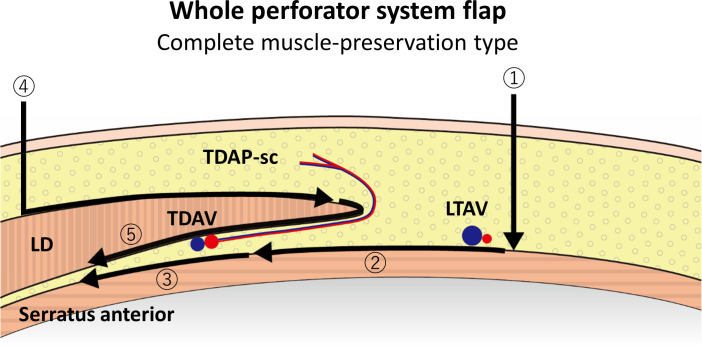

広背筋（こうはいきん＝背中の表面をおおう大きな筋肉）を犠牲にせず、その上の皮膚だけを血流を保ったまま挙げられることを示した論文です。従来の広背筋皮弁（広背筋を皮膚ごと移す皮弁）から筋肉を取り除き、胸背動脈（きょうはいどうみゃく＝広背筋を養う動脈）から皮膚へ立ち上がる穿通枝（せんつうし＝筋肉などを貫いて皮膚に達する細い枝）1本だけを血流源にする、という発想です。題名がそのまま「筋肉のない広背筋皮弁（latissimus dorsi musculocutaneous flap without muscle）」となっており、のちに胸背動脈穿通枝皮弁（TDAP／TAP皮弁）と呼ばれる皮弁の原著とされます。光嶋・副田（1989）が下腹部で示した穿通枝皮弁の概念を、背中で立て直した報告と読むことができます。
背景 ― 広背筋皮弁の万能さと、筋肉を取る代償
広背筋は、背中の表面を扇のように広くおおう大きくて薄い筋肉です。この筋肉と、その上の皮膚をひとかたまりにして移す皮弁を広背筋皮弁（こうはいきんひべん＝latissimus dorsi musculocutaneous flap、筋肉と皮膚を一緒に運ぶ筋皮弁の一種）といいます。血流を養う胸背動脈が太くて安定しているうえ、面積も大きく採れるため、胸壁・乳房・四肢などの再建に広く使われてきた主力の皮弁とされます。
しかし「筋肉ごと運ぶ」ことには代償もあります。広背筋を採取すると、腕を後ろへ引く・体に引き寄せるといった動きにかかわる筋肉の力が弱まるなど、採取した側（ドナー＝提供部）の障害が起こりうるとされます。また筋肉がついている分だけ皮弁が厚く（かさばる）なりやすく、薄い皮膚だけが欲しい再建には向かないこともあります。
そこで生まれたのが、「筋肉は体に残したまま、その上の皮膚だけを血管付きで運べないか」という問いです。その鍵になったのが穿通枝（せんつうし）という考え方で、深いところを走る動脈から筋肉を貫いて皮膚へ立ち上がる細い枝を1本追いかければ、筋肉を切らずに皮膚を挙げられるのではないか、という発想です。
この論文がしたこと
著者らは、広背筋皮弁の皮膚の部分（皮膚島＝ひふとう、血流を保ったまま移す皮膚のかたまり）を、たった1本の皮膚穿通枝だけで、筋肉を付けずに挙げられることを示しました。これが題名の「筋肉のない広背筋皮弁」の意味です。
根拠として、40体の新鮮な遺体標本に着色したラテックス（色をつけたゴム状の造影材）を注入する解剖研究を行いました。その結果、胸背動脈の垂直な筋内枝（きんないし＝広背筋の中を縦に走る枝）から、皮膚へ向かう2〜3本の皮膚枝（穿通枝）が一定して存在することが分かったとしています。そのうち最も太いもの（径およそ0.4〜0.6mm）1本で、25×15cmの皮膚島を養えると報告しています。
さらに、穿通枝の根元につながる胸背動脈の近位幹（きんいかん＝体の中心寄りの本幹）まで含めて取り出すと、血流の茎（けい＝皮弁を養う血管の幹）が長くなり、移植先での血管吻合（けっかんふんごう＝血管を縫いつなぐこと）や、島状皮弁として使うときの回転がしやすくなるとしています。ただしこの操作で茎は長くなっても、移せる組織の量そのものは増えない、とも述べられています。
解剖と手技の要点
胸背動脈は、腋窩動脈（えきかどうみゃく＝わきの下を通る動脈）から肩甲下動脈を経て枝分かれし、広背筋の裏側を下っていく動脈です。この動脈は広背筋の中を縦に走る枝（垂直な筋内枝＝下行枝とも呼ばれます）を出し、そこからさらに細い穿通枝が広背筋を貫いて皮膚へ達します。原著が着目したのは、この筋肉を貫くタイプの穿通枝（筋皮穿通枝＝きんぴせんつうし）です。
手術では、まず皮膚を養っている主要な穿通枝を1本見つけ、その枝を広背筋の筋線維のあいだから丁寧に剥がして（筋肉の中を割って追いかける操作＝筋肉内剥離）、根元の胸背動脈まで露出させます。こうして血管だけを取り出せば、広背筋は体に残したまま、その上の皮膚と脂肪を皮弁として挙げられる、というのが要点です。血流の入口が「筋肉ごとの太い塊」から「細い枝1本」に置き換わるわけです。
なお、穿通枝がどこに出てくるかは個人差があります。その後の解剖研究では、広背筋の外側の縁の近く（後腋窩ひだから数センチ下、外側縁のやや後方）に主要な穿通枝が出やすいとされ、実際の手術では超音波ドプラなどで事前に位置を確かめてから皮弁をデザインするのが一般的です。

結果
抄録から確認できる結果は簡潔です。まず解剖研究では、40体の新鮮遺体標本で、胸背動脈の垂直な筋内枝から皮膚へ向かう穿通枝が2〜3本、一定して存在することが示されました。そのうち最大の穿通枝（径約0.4〜0.6mm）1本で、25×15cmという広い皮膚島を養えるとされています。
臨床では、この手技を5例の患者に行い、組織の壊死（えし＝血流が届かず組織が死ぬこと）や皮弁の脱落（皮弁全体が生着せずに失われること）は起こらなかったと報告されています。抄録に記されている臨床成績はこの範囲までで、5例がそれぞれ体のどの部位の再建だったか、生着率などの詳しい数値は抄録には示されていません。したがって本ページでも、それ以上の成績は記載しません。
あわせて、胸背動脈の近位幹まで含めると茎は長くなるものの、移せる組織量は増えない、という点も結果として述べられています。
意義 ― 「筋肉は本当に必要か」を背中で問い直した
この論文は、胸背動脈穿通枝皮弁（TDAP／TAP皮弁）の最初の記載として広く引用されています。広背筋を体に残せるため、採取した側の筋力低下などの障害を減らせること、そして筋肉を含まない分だけ皮弁を薄く柔らかく作れることが、評価される主な理由とされます。
位置づけとしては、穿通枝皮弁という設計思想の広がりの中にあります。光嶋・副田（1989）が下腹部で「腹直筋を伴わない皮弁（inferior epigastric artery skin flaps without rectus abdominis muscle）」として穿通枝皮弁の概念を示したのに対し、本論文の題名は「筋肉のない広背筋皮弁（latissimus dorsi musculocutaneous flap without muscle）」であり、同じ問い ―「筋肉は本当に必要か」― を背中という別の部位で立て直したものと読めます。
TDAP／TAP皮弁は、その後の再建外科で乳房再建や四肢・体幹の軟部組織の再建などに広く用いられるようになったとされます。血管ごと切り離して移植先の血管に縫い直す遊離皮弁として使えるほか、血管の茎だけでつながったまま近くの欠損へ回す島状皮弁・プロペラ皮弁（茎を軸に皮弁を回転させて欠損を覆う方法）としても使えるとされ、筋肉を温存する穿通枝皮弁の代表例のひとつと位置づけられています。
この論文の要点
- 広背筋を付けず、胸背動脈の皮膚穿通枝1本だけで広背筋皮弁の皮膚島を挙げられることを示した（題名がそのまま「筋肉のない広背筋皮弁」）。
- 40体の新鮮遺体標本（着色ラテックス注入）の解剖研究で、胸背動脈の垂直な筋内枝から2〜3本の皮膚穿通枝が一定して存在することを示した。
- 最大の穿通枝（径およそ0.4〜0.6mm）1本で、25×15cmの皮膚島を養えるとした。
- 胸背動脈の近位幹まで含めると血管の茎が長くなり、血管吻合や（島状皮弁での）回転が容易になるが、移せる組織量は増えない。
- 5例の臨床例に用い、組織の壊死や皮弁の脱落はなかった（抄録に記載された成績はこの範囲まで）。
- のちに胸背動脈穿通枝皮弁（TDAP／TAP皮弁）と呼ばれ、光嶋・副田（1989）の穿通枝皮弁の概念を背中で実現した原著とされる。
用語ミニ辞典
- 胸背動脈穿通枝皮弁（TDAP／TAP皮弁）
- 広背筋を体に残したまま、胸背動脈から皮膚へ立ち上がる穿通枝を血流源にして皮膚・脂肪だけを挙げる皮弁。thoracodorsal artery perforator flap の略。本論文がその原著とされる。
- 広背筋（こうはいきん）
- 背中の表面を扇のように広くおおう、大きくて薄い筋肉。腕を後ろへ引く・体に引き寄せるなどの動きにかかわる。胸背動脈がこれを養う。
- 広背筋皮弁（筋皮弁）
- 広背筋と、その上の皮膚をひとかたまりにして移す皮弁。血流は安定するが筋肉を犠牲にし、皮弁が厚くなりやすい。本論文はこの皮弁から筋肉を取り除いた。
- 胸背動脈
- 腋窩動脈から肩甲下動脈を経て枝分かれし、広背筋の裏側を下る動脈。中を縦に走る筋内枝から、皮膚へ向かう穿通枝が分かれる。TDAP皮弁の血流源。
- 穿通枝（せんつうし）
- 深部の動脈から、筋肉や筋膜を貫いて皮膚へ立ち上がってくる細い枝。筋肉の中を貫くものを筋皮穿通枝、筋と筋のあいだの隔壁を通るものを中隔皮穿通枝と呼ぶ。
- 皮膚島（ひふとう）
- 血流を保ったまま移す皮膚（と脂肪）のかたまり。本論文では、穿通枝1本で25×15cmの皮膚島を養えるとされた。
- 遊離皮弁 / 島状皮弁・プロペラ皮弁
- 遊離皮弁は血管ごと切り離し、顕微鏡下で移植先の血管に縫い直す皮弁。島状皮弁・プロペラ皮弁は、血管の茎だけでつながったまま近くの欠損へ回す皮弁。TDAP皮弁はどちらにも使えるとされる。
- ドナー（採取部）の合併症
- 皮弁を採取した側に起こる障害。広背筋を採ると筋力低下などが起こりうるが、筋肉を温存するTDAP皮弁ではこれを減らせるとされる。
本ページは形成外科の学習・参照を目的とした編集部によるオリジナルの日本語解説で、原著（英語）の逐語訳・全文転載ではありません。正確な内容・数値・図は必ず上記リンク先の原著をご確認ください。
掲載している図は、原著の図ではありません。原著の図は出版社が著作権を持ち転載できないため、同じ術式・同じ解剖を扱った無料公開（オープンアクセス／CC BY）論文の図を、出典とライセンスを明記して引用しています。